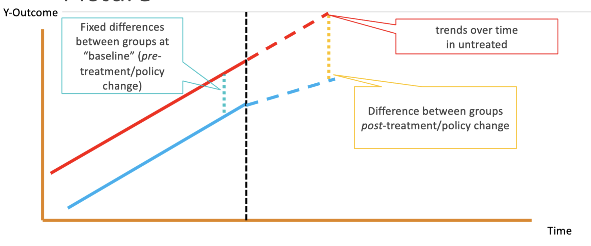

Difference-in-Differences
Introduction
- Credibility without Experimens:
- Even without a randomized experiment, we can sometimes generate credible estimates of casual relationships in other ways.
- Controlling for Enough
- Natural Experiments
- Within-unit changes
- Within-unit changes
- Suppose we want to know the effect of a policy
- We can find states that switched their policies, and measure trends in the outcome of interest before and after the policy change.
- Source of Credibility:
- Assumption: Trends in potential outcomes (Y0's and Y1's) are the same for
- the units that did change their policy (treated)
- the units that didn't change their policies (control)
- Then, we have an Apples-to-Apples comparison
- Analysis can give us credible estimate
- This assumption is called the parallel trends assumption
- It may be defensible/testable
- It will be much more defensible than simply assuming that places with and without the policy are comparable.
Example and Graphical Approach
- Graphical Depiction:

- We compare the difference in differences between groups before and after treatment/policy change
- Other interpretation:
Assumptions and Bias
- 2 Units and 2 Periods - Two Flawed Approaches
- Compare the treated and untreated unit in the second period.
- Requires the assumption that Y0treated=Y0untreated, which is likely unjustifiable
- Examine the change in the outcome in the treated unit before and after the treatment.
- Requires the assumption that nothing happened between the two periods that could have influenced the outcome (i.e., Y0treated,t=2=Y0treated,t=1), which is almost surely unjustifable in any interesting setting.
- 2 Units and 2 Periods - Combined Approached:
- Calculate the difference-in-differences: change in treated before and after minus change in untreated before and after
(Y1treated,t=2−Y0treated,t=1)−(Y0untreated,t=2−Y0untreated,t=1)
- Algebraically identical to another difference-in-differences: the difference between the treated and untreated units after the treatment minus the difference between the treated and untreated units before the treatment
(Y1treated,t=2−Y0untreated,t=2)−(Y0treated,t=1−Y0untreated,t=1)
- DiD and Treatment Effects:
- Bias:
Bias=Did−ATT=(Y1treated,t=2−Y0treated,t=1)−(Y0untreated,t=2−Y0untreated,t=1)−(Y1treated,t=2−Y0treated,t=2)=(Y0treated,t=2−Y0treated,t=1)−(Y0untreated,t=2−Y0untreated,t=1)
- The DiD estimate will be biased if the change in Y0's for the treated unit differ from the change in Y0's for the untreated unit.
- The DiD estimate is unbiased if the treated and untreated units experience the same trends in Y0 (parallel treads).
- Assumption:
- Note that parallel trends assumptions are about Y0's or Y1's but not Y's, so in this sense, the trends are fundamentally unobservable and this assumption cannot be directly tested.
- What's good about DiD?
- DiD accounts for all time-invariant differences between units that would plague a cross-sectional analysis
- It also accounts for all of the time-specific factors that would plague a "before-and-after" analysis
- It does not account for time-variant differences between units.
- This is only a problem if these factors vary in ways that correspond with the treatment.
Extending Model and Alternative Approach
- N Units and 2 Periods:
- At least three options (all of which are algebraically identical) for calculating DiD
- With 2 periods, all the these approaches are equivalent.
- Approach 1: calculate the 4 means of interest (average Y for treated before, average Y for treated after, etc.), and calculate the DiD by hand.
- Approach 2: Put the data into long format with 1 row per unit-period, and run the following regression:
Yit=β×Tit+γi+δt+ϵit,
where γi represents unit fixed effects, and δt represents time period fixed effects.
- N Units and N periods:
- The fixed effects approach is best here and also more flexible.
- E.g., it allows we to include time-varying covariates